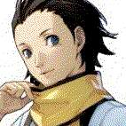

Meet some of our members (who want to be known). Sometimes we make our own roles or titles which you can view
by clicking "Our Words...". Our headspace is as large and as complex as you can imagine with polyfragmented
systems but we won't be disclosing any details about it.
Our Words...
Watcher: Responsible for watching over the subsystems and the fragments that are housed in them.
Taken from Drakengard / NieR and angelology (the Watchers).
Guide: (title might change) Responsible for guiding everyone both inside the headspace and outside
the headspace or the physical world.
Scanner: Nines role, directly from NieR Automata. Responsible for recording and archiving all
happenings in the body and the system. Monitors the body's physical and mental health.
Handler: Processes emotions and more. Processing seems to come in two ways: going in and
going out. It's a joke from the job title "food handler" since Demi eats magatamas.
Healer: (questioning title) Takes care of the fragments in the subsystems.
Mediator: Another word for "caretaker". Helps calm down members and resolve conflicts.
Roles are never permanent, are always changing, and always overlap. Members can have more roles than what's
listed and members don't have to have a role at all.
Nines // Scanner
I document and manage the body's health, physically and mentally, along with
keeping track of system information. üûö
more
Minato, Yuki // Manager
Yo. System manager, data organizer, and village asshole. Truthfully, I value
everything that is near and dear to me.

Ryoji // Death
"It". My role is being death incarnate. The "grieving" alter. I hold loss
and grief in both the outside and inner worlds. üûö more
Demi // Handler
Processor of emotions and more (going in). Eater of magatamas. I love being
quiet or mute but I can speak if I want to.
Kei // Core
Hi... I like the name Kei Amemura even if it's not cannon from my source!
I'm autistic. I love coding and being a hermit. üûö more
Nier // Core, Mediator
Hey there, I'm Nier. They pronouns are preferred. I walk around and help out
whenever needed. I live in my home in my village. üûö more
Rion // Guide, Watcher
Hey. I'm your guide when navigating the headspace. I record everything in
our inner world. I'm sickly so I'll need your patience. üûö more
Jayden // Body
Hi. I'm the vessel or body but I rarely front- at least on my own. If you're
talking to me then you might not be talking to me.
Louie // Watcher, Healer
Hey, I'm Louis from Code Vein but you can just call me "Louie". I watch over
our fragments in a subsystem.